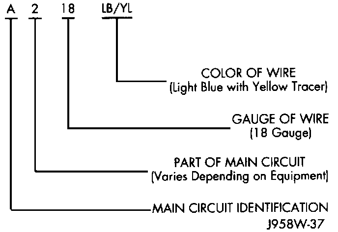
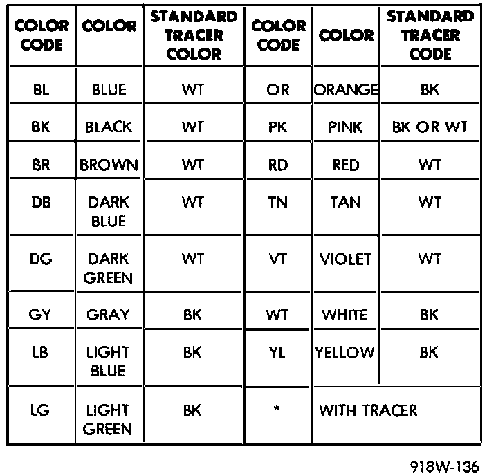

Wire Color Codes
Wire Color Code Identification:

Wire Color Code Chart:

Each wire shown in the diagrams contains a code which identifies the main circuit, part of the main circuit, gauge of wire and color. The color is shown as a two-letter code, which can be identified by referring to the Wire Color Code chart. If the wire has a tracer and it is a standard color, an asterisk will follow the main wire color. If the tracer is non-standard, the main wire color will have a slash (/) after it, followed by the tracer color.